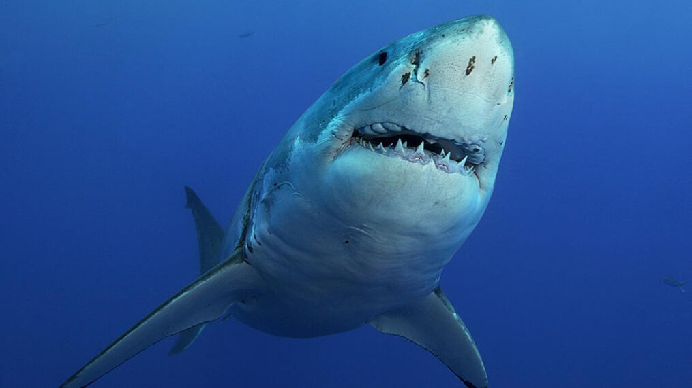

Learn about Sharks
This is a website for the education and appreciation of Sharks and the wonderful impact that they have on the planets oceans. They are used as symbols of fear yet these creatures are so elegant and loving, without them the oceans ecosystem would die. You can find out in the web page facts about these wonderful creatures, see pictures in the gallery of different types of sharks and their diets and habitats, watch videos of sharks swimming around seeing them in action and you can find a link to the World Wildlife Fund and information about what they are doing to preserve this species existance.

Discover The Wonderful things the World Wildlife Fund is Doing For Sharks
The World Wildlife Fund is commited to many noble causes but their effort to defend and preserve the shark population is what we are dedicated to highlighting. If you want to learn more and feel motivated to donate you can head to that page with this nifty button!
 Join the Cause
Join the Cause
See Pictures of the Different Types of Sharks
Look at our gallery where we have fun photos of a few types of sharks in their natural habitat. As dory from Finding Nemo says "just keep swimming" and with our awesome collection of pictures of sharks swimming, hunting, even divers braving the deep with them, theres no end to the amount of content you can "swim" through.
Shark Vids
Here you can watch some fun videos about Sharks and learn what they eat how they hunt and even how they see and smell! These are educational videos to teach us all a little more about sharks than that they are scary. If you click the play button below youll hear the sound of you diving into the deep, afterwards take a visit to the Shark Video page. Where you can see them do their cool shark stuff.
Visit the Deep!